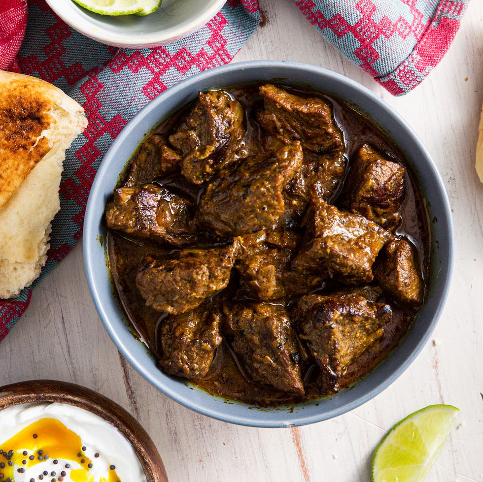

Beef Curry

Description
Spicy beef curry cooked in duck fat, onions, garlic and slow cooked with a wide selection of spices
Ingredients
- Beef Chuck- 1 Kg
- Duck Fat- 3 Tbs
- Onions- 250 Gms
- Tomatoes- 250 Gms
- Garlic- 5 Cloves
- Ginger- 1/2 inch
- Tomato Paste- 2 Tbs
- Tumeric- 1/4 Tbs
- Chilli Powder- 1 Tbs
- Corainder Powder- 2 Tbs
- Garam Masala- 1 Tbs
- Heavy Bottomed Pan- any deep bottom pan will work
- Patience- Minimum 3 Hrs (lmao)
Steps
- Heat up the pan and add Duck Fat and wait until its hot
- Add your thinly sliced garlic & ginger, sautee until raw fragrance is gone dont let them burn!!
- Add your sliced Onions and sautee them until translucent
- Add tomatoe paste and sautee until its incorporated well with the Onions
- Add Tumeric, Chilli, Coriander & Garam Masala, sautee them for a minute
- Add the Beef chuck cut into 1/2 inch cubes and increase the burner temperature to Max
- Continuously sautee the beef until it starts to release its water and that water is dried out
- Add 500 ml of water and salt to taste and stir well
- Reduce the temperature to medium-low and close the lid
- Cook for a minimum of 3 Hrs stirring ocassionally and adding water to get to the desired consitency